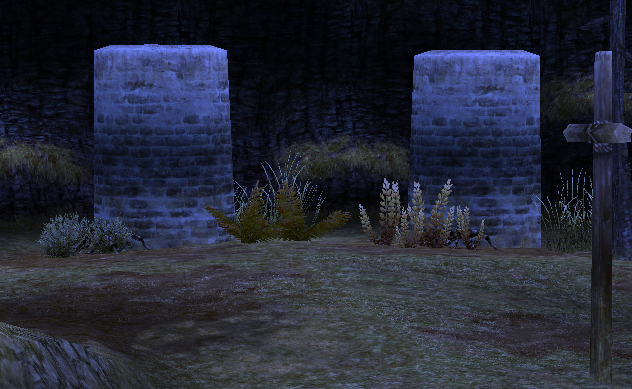
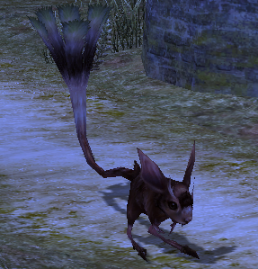
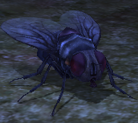

Neumann on Central Plaza
You can start from any direction.
Talk to each guards outside of the Astir city.
PART I - Western Soplar Highway
Need:
- Find the stash
Info:
- Talk to the Imperial City Guard
- Go to G-15 and get the Stash by walking between the two pillars
PART II - Northern Soplar Highway
Need:
- Kill Chompy Rats Lv16 - x6
Info:
- Talk to Confederation City Guard
PART III - Eastern Soplar Highway
Need:
- Kill Booming Fly Lv15 - x8
Info:
- Talk to the Royal City Guard
Talk to Neumann
Reward:
- 10000 XP
- Salves x3